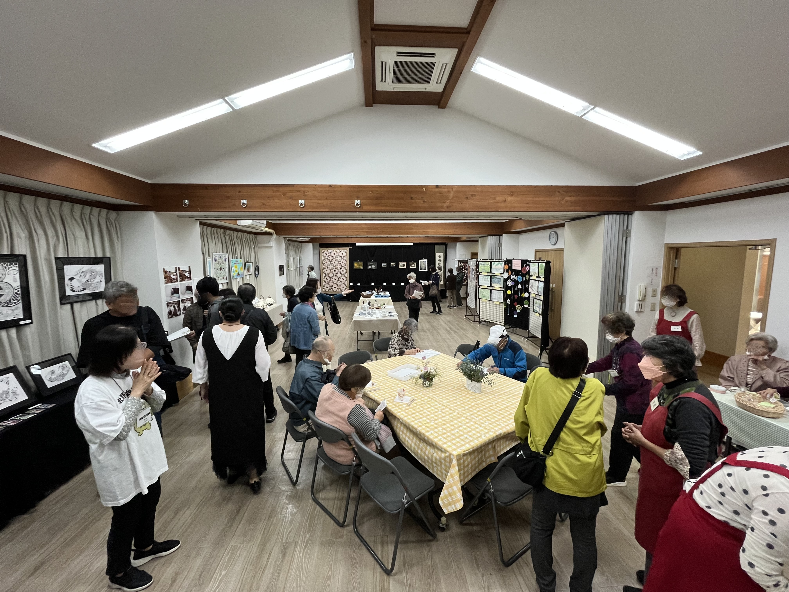
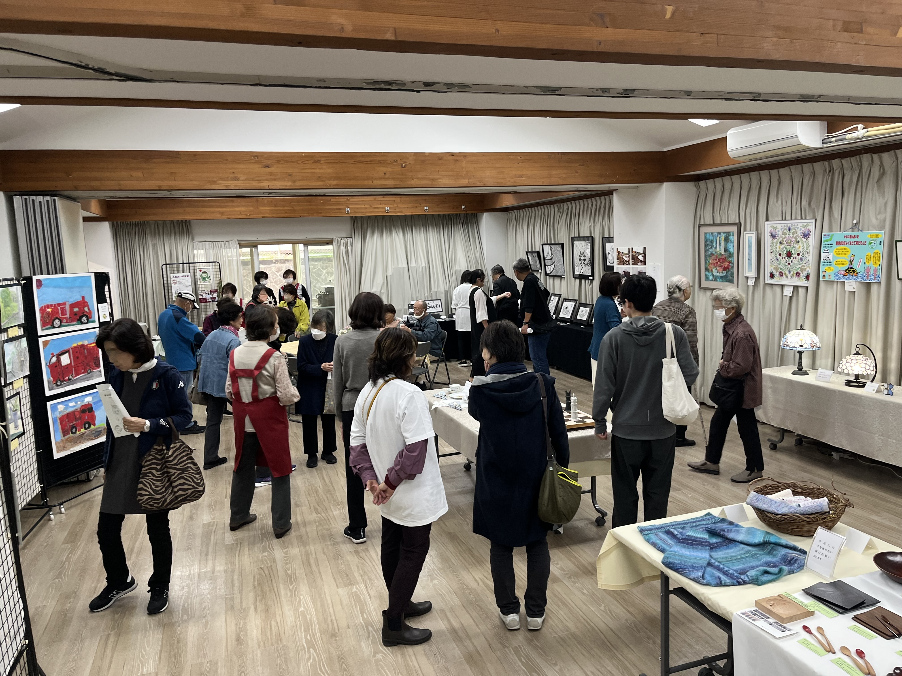
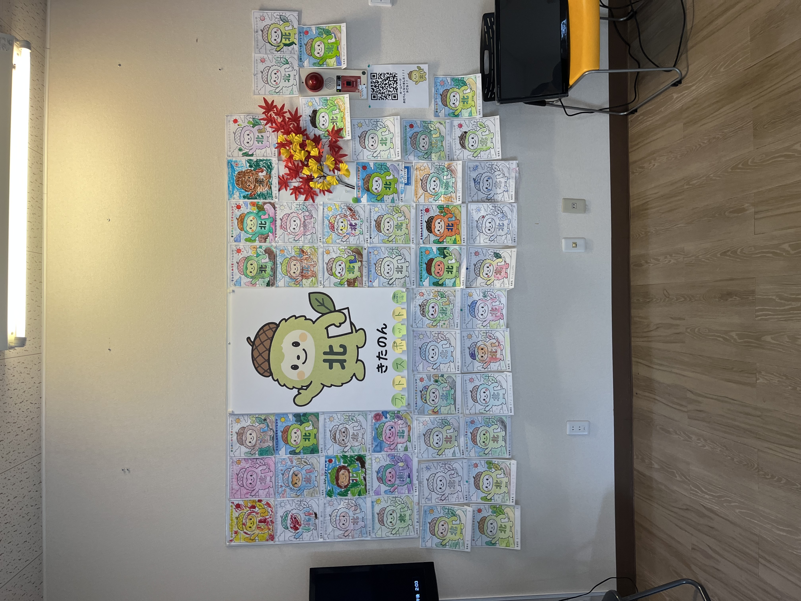
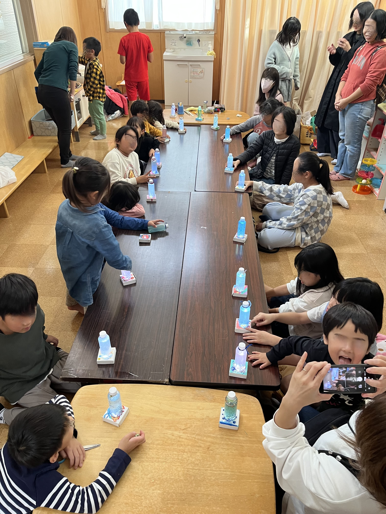
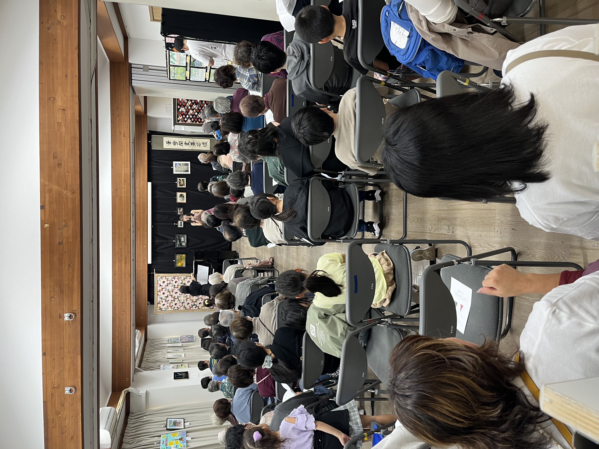
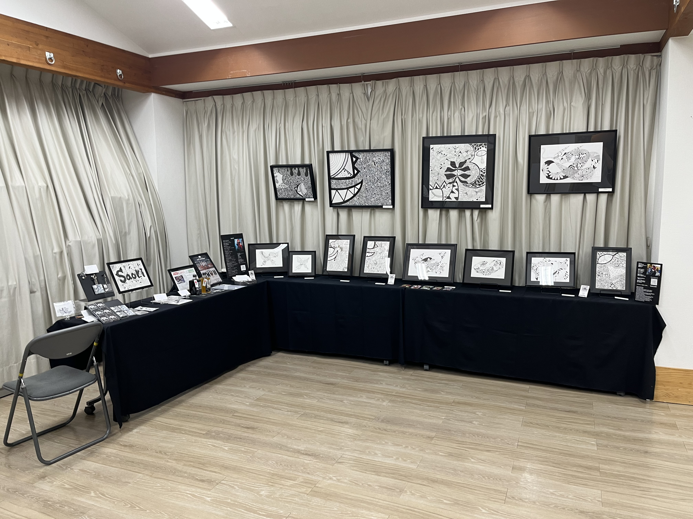

第42回北野台文化祭 2026
2026.10.31 [Sat] - 11.01 [Sun]
10:00〜16:00（予定） ※一部展示は15:00まで
会場：北野台自治会館
お知らせ
出展エントリーの受付を終了しました
出展エントリーの受付を終了しました。たくさんのお申し込みをありがとうございました。今年は昨年を上回る多くの出展を予定しています。開催に向けて、展示やイベントの詳しい情報を順次公開していきます！
出展エントリー受付開始
作品展示の出展エントリー受付を開始しました。応募締切は9月12日（土）です。
※出展エントリーの受付は終了いたしました。
北野台文化祭2026オフィシャルサイト公開
アートが暮らしに溶け込む、
2日間だけの特別な文化祭。
北野台文化祭は、地域住民一人ひとりがアーティストとなり、豊かな感性とあたたかい人々のつながりを育む場所です。絵画、写真、書道、手芸、工芸、子どもたちが心を込めて塗った「きたのんぬりえ」など、多様な表現が自治会館を彩ります。

2026年 今年のみどころ
「見て、つくって、食べて、聴いて みんなで楽しむ2日間！」
作品を見て、つくって、食べて、音楽やおはなしを聴いて。
今年もみんなで楽しめる文化祭を開催します。
多彩な作品展示

※写真は昨年の文化祭の様子です
絵画・写真・書道・手芸・工芸・陶芸・盆栽・花など、地域のみなさんの多彩な力作が自治会館を彩ります。
地域の学校や団体などの作品・活動も展示します。
今年は昨年を上回る多くの出展を予定しており、ゲストアーティストによる特別展示も予定しています。
ミニコンサート
2日間それぞれに、音楽と朗読のミニコンサートを開催します。
ワークショップ
子どもから大人まで楽しめる、ものづくりや体験企画を予定しています。
模擬店
飲食・雑貨・体験など、地域のみなさんによる模擬店を予定しています。地域のみんなでつくる文化祭ならではの、温かく賑やかな時間をお届けします。
カフェコーナー
展示やイベントの合間に、ゆっくり過ごせるカフェコーナーを予定しています。文化祭を回る途中でほっとひと息つける憩いのスペースです。
きたのんぬりえチャレンジ
子どもから大人まで大人気！おうちで好きな色を塗った「きたのんぬりえ」を文化祭にお持ちいただくと、会場内に飾られます。
昨年の開催風景（2025年）
前回の北野台文化祭で実施された展示や催しの様子です。会場のあたたかな雰囲気をぜひご覧ください。
地域の方の作品展示
絵画、写真、書道、手芸、工芸など、地域の皆さんの力作を展示しました。近隣小中学校の児童・生徒による作品も会場を彩りました。

きたのん塗り絵チャレンジ
子どもたちが自由に色を塗った「きたのん」のぬりえを展示しました。会場を明るく彩る、にぎやかなフォトスポットになりました。

ワークショップ
子どもから大人まで参加できるワークショップを開催しました。作品づくりを通じて、ものづくりの楽しさを体験しました。

地域の方のミニコンサート
地域の方によるミニコンサートを開催しました。あたたかな音楽が会場に響き、来場者の皆さんと交流する時間になりました。

ゲストアーティスト作品展示
ゲストアーティストSaoriさんによる作品展示を行いました。個性豊かな作品が、文化祭に新しい刺激と彩りを添えました。
昨年のフォトギャラリー
たくさんの笑顔と素晴らしい芸術に囲まれた、昨年の文化祭のワンシーンです。画像をタップすると拡大表示できます。
公式キャラクター きたのん
北野台のどんぐりの森からやってきた、あたたかい地域を見守る北野台文化祭の公式キャラクター「きたのん」です。
文化祭の会場では、子どもたちから大人の方まで自由に塗って楽しめる「きたのんぬりえチャレンジ」を予定しています。色見本の確認やぬりえ用紙のダウンロードは、下記の「きたのんぬりえチャレンジ」からご覧いただけます。
公式SNS
Instagram・Facebookで最新情報を発信しています。
アクセス・開催概要
10:00〜16:00（予定）
※一部展示は15:00まで
※Googleマップでは「東京都八王子市北野台4-25-2」で表示されます。
※駐車場はありませんので、公共交通機関をご利用ください。